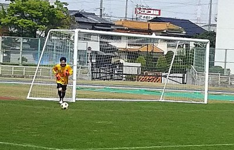
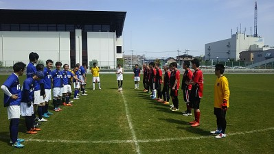
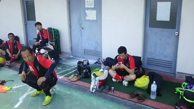
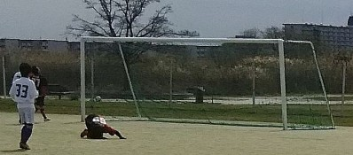

熊本の震災で被害に遭われた方にチーム一同、心よりお悔やみ申し上げます。
そんな状況の中、ちと申し訳ない気持ちですがとてもいいグランドで楽しい時間を昨日は過ごせました。昨日は終わってから風呂入って、飯食ってテレビ視てたらいつのまにか寝てた（笑）、活動報告まだかなって思われていた全国のファンの皆さん遅くなりました（笑）
昨日は合計で１８名の参加がありました。その分今日は天気もあったけど少なくて中止にしました。雨やしといつもギリギリのヤスさんが早めに欠席が入ってたのは確信犯ですな（笑）
とてもいいグランドにお誘い頂いたジェネシスさん本当にありがとうございました。おかげでとても楽しい時間を過ごすことが出来ました。また対戦して頂いたSPARKさんもいつもながら楽しい時間を過ごさせて頂いてありがとうございます。
今日も試合ごとに得点シーンやハイライトを中心に報告させてもらいます。
その前に試合前に隅っこでパス回ししてたらテラさんがアウトサイドでのボールリフティングとか華麗な技を見せつけてそのまま僕にパス、僕はそんなことも出来るはずもなく、ボールを後ろへ無様にこぼして取りに行ったら、いきなりへこみ（水道蛇口）が目立たないようにあってそこに足が入ってぐにゃってなりました。大事には至らなかったですが、あれはデークテラーの陰謀しか思えないっす（笑）
チーム分けはある程度僕が組み合わせて、２人でじゃんけんで決めました。試合結果に載せてます。
１試合目はAチームとジェネシスさんとでした。最初はジェネシスさんの若手組に攻められたりもしてましたが、バック？のテラさんとかが奮闘して攻撃をしのいでました。（バックといいながら４回はゴール前に行ってたような（笑））。うちのチームは縦へのパスがいい感じで、そのパスにいい飛び出しをしたスガちゃんがロングループシュートを２回くらい狙ったりしましたが決まらなかったっすね。いつもならコスいシュートは１００発１００中なのに（笑）
んで、うちの１点目はセンターバックだったはずのテラさんがゴール前で個人技で交わし、角度の無い所からいい感じのシュート、キーパーも完全にコースに入ってなくて無人のゴールへってところでデフェンスがナイスブロック、そのボールが山なりに回転しながらキーパーのところへ行って攻撃終了かなって思ったらキーパーファンブル、ボールはその横に居たおかちゃんへ、テラさんのいいシュートの印象を無くしたごっつあんゴールでした（笑）。
２試合目はBチームとSPRAKさん。フォーメーションを4-1ｰ4-1でして、中盤をまえちゃんとタクちゃんのテクニシャンコンビで自由に動いてもらってええ試合運びが出来たかなってバックしてて思ってました。
得点はそのタクちゃんから生まれました。横パスを受けてキープ、前にはデフェンス２名、その２名の間をドリブルで抜いてキーパーの位置も見極めて冷静にゴールに流し込みました。タクちゃんは初得点でしたね。あとの試合でも得点決めているので、ぜひ感想をお待ちしています。
さて、うちの天然キャラの活躍にも触れておきますかね。センターサークルでボールカット、そのまま中央をドリブル、デフェンスもいない、キーパーと１対１。デフェンスしながら見てたら助っ人のダークテラーが「外すんちゃう」、その通りに（笑）。見てた感じ打つ前に横になってたキーパーの足先にボールが当たって無情にもゴールの外へ。その後のええ感じのコーナーキックからのヘッドもゴールの外へ、後からカキコするまんちゃんの大活躍が無ければ戦犯で銃殺刑だった人はさて誰でしょう？答えは後でわかります（笑）「余裕過ぎる感じになると苦手なんや」とか言ってたけど（笑）。
さてさて、うちの正キーパーが大活躍でした。まんちゃんが何度もピンチを救ってくれて、相手の素晴らしいフリーキックもナイスセーブでほんと今日の試合、まんちゃんの活躍が無ければたぶん負けてました。本日のＭＶＰですね。試合の感想をぜひよろしくお願いします。ただ、元正ゴールキーパー？？？？？？のわだっちからはもっと点を取られるのを経験してからでまだまだらしいっす（笑）
個人的には僕も一度だけ高い所で奪ったボールでサイドを駆け上がって、反対から中央に駆け上がってきたよっしゃんに個人的にもええ感じのインサイドでのパス、惜しくもゴールにはならなかったけど外からは「オー」の声、よくよく考えたら絶対にパスがいい「オー」じゃなくてパスを出したことの「オー」と思ったら後から聞いたらやっぱり。しかもそのパスの後「デフェンス、すぐ戻れ」の連呼。なんで僕だけ？ほんま酷い扱いですわ（涙）
後はまえちゃんがキープしててデフェンスの股を狙っている感じの時に観戦中のスガちゃんから「股、股」ってあかんやろ。個人的に「股、股言うな」ってまえちゃんの反撃を期待してたのになかったのはちと残念でした。
３試合目は再び、Ａチームとジェネシスさんでした。ジェネシスさんはサイドから組み立てての攻撃が多かったですがうちは縦パスでの攻撃がいい感じでしたね。
コスイヤー、コスイン、コスプレーヤーからの縦パスが絶妙な感じで、オフサイドって思って相手チームが少し動きが止まった時にテラさんが抜け出して少しドリして冷静に流し込みました。テラさんの今年の得点は裏への飛び出しが絶妙なのが多い感じですね。タイミング取るのが絶妙っすね。
ここでもキーパーのまんちゃんのファインセーブが光りました。１点取られましたがあれは相手チームのシュートが素晴らしかったですが、それでも横っ飛びが凄かったです。ほんと頼もしいです。
さて、ハマさんからは報告に書かないようにと言われましたが（笑）、やはり平等にカキコします。２点目はスガちゃんがドリブルしてシュートが詰まってコロコロと元々ラボーラニックネームがコロコロだった人の元にそれを左足で強烈なイーグルショットでゴールに突き刺さりました。しばらくはハマさんもなぜか僕も「様」で呼ばないとあかんみたいっす（笑）、奥さんの誕生日とかで奥さんに「今日、いいゴールを奥さんのために決めたんや」とか言ったらたぶん「あっそ」で終わったでしょう（笑）。ぜひハマさんへの激励のコメントをお待ちしています。
後はまたまたやっちゃったのがトップしてたヤスさん。誰かの縦パスを裏に抜けてゴール前にドリブル、キーパーと１対１．ギリギリでと欲を出したら、打とうとしたらデフェンスに追いつかれた（笑）、ていうかこの前も同じシュチュエーション見てるし。体調面で風邪かなとか言い訳してたけど「酒」ならわかるわ（笑）。これからはおとなしくバックしましょうね～。
最後の４本目はＢチームとＳＰＡＲＫさんとでした。試合前にポジション決める時に１ボラでよっしーに。僕から「１ボラやから上がったらあかんで」と１０回くらい言いましたがユウちゃんから「言っても一緒」、いやいやそんなことは無いでしょう・・・・あったわ（笑）
１点目はタクちゃんが右サイドからのドリで持ち込んで相手を交わしていええ感じのシュートを決めて２点目、打倒オカちゃんを公言しているみたいですのでぜひ頑張って欲しいですね（笑）
タクちゃんにはもう一本見せ場が、裏へ抜け出してシュート、キーパーが手で防いだペナルティエリアの外で（笑）、フリーキックでタクちゃんが本気に狙ってたけど惜しくもデフェンスに当たってまたボールがタクちゃんへ、めちゃ申し訳ない感じだったけど前に４人いたから横って僕が声出したらパスを出してくれて、僕は右サイドから左サイドから走ってくるよっしゃんにインサイドでライナー性のボールをダイレクトで出して、よっしゃんがそれをダイレクトボレー、当たりは良かったけど角度が無い所でゴールにはならなかったでしたね。僕は最近得点よりかは得点に繋がるプレーが気に入ってます。
さて２点目ですが、誰かわかんないけど縦にポーンと出した？クリア？が相手チームのキーパーに元へ、風が強かったのもあって取ろうとしたらバウンドが高くて取り損ねて、それをかっさらって無人のゴールへシュート、トップかナイス詰めと思ってたら、決めた人はボランチのはずの人でした（笑）、でも中央からのドリとかポコッて結果的には得点が決めれたので良かったですね。決めた後の得意の右手の人差し指をあげるポーズが無かったのは残念。
試合前にハマさんに得点を決めさせてあげたい、当面誰かさんから頭が上がらなくて「様」扱いになるのは忍びないのでとハマさんにタクちゃんと２トップでと伝え、ハマさんへと接待パスをと何度も考えてたけどほとんどトップじゃなくて２列目からボランチの位置に（笑）。なぜかは良ければコメントをお待ちしています（笑）。
てな感じで一日が終わりました。一晩寝たら記憶が薄まっているので間違いがあるかもしれないっす。思い出しながら書くのは結構しんどいっすね。でも今日は練習が無いのでゆっくりと書いてマース。
最後に全く関係ないけど、後半助っ人して次に本チャンで連続で出る時に「体力に自信がある人が後からがいいよ」って話したら誰かが「もりちゃんは？」って言ったのがおもろかったっす。（笑）
画像は今日のＭＶＰと最初の整列と最後は「何見てんだコラ」的だけど実際はおちゃめな人が写っている一枚です。
昨日、参加された皆さんお疲れ様でした。
来週も試合です、早めに出欠登録確定のほどよろしくお願いします。
今日は少し肌寒いと思っていたらやっぱり気温自体は上昇していて動くと結構汗が出ましたね。これから段々と夏がやってきますが、各自水分補給はきちんとしてくださいね。
今日は合計で１６名の参加がありました。いつもの場所に集合して、ゴール立てる途中でおっちゃんが来て「あのう、すみませせん、今日はここでボーイスカウトのイベントがあって許可証もらっているんですが・・・」、それは仕方ないのでやむなく先週と同じく奥に移動、でももう少し早く言ってほしかった（笑）
奥のいつもの場所がまだ空いてたのでそちらにぞろぞろと移動、先週はミニゲの前にちょっといろいろしてましたが、今日はアップの代わりに鳥かごとかリフティングして、その間に僕がコートを作ってその後はミニゲ（最近はミニはゴールだけで中ゲだな（笑））
準備が終わって、ちょっとだけリフティングに参加しましたがスガちゃんが顎でトラップしたり、笑いがとまんなかったり壊れてた（笑）。２５回続いたって言ってたけどめちゃ嘘っぽかった（笑）
ミニゲではカツさんの素晴らしいヘディングシュート（ちなみにクロスは僕だよーん）があったり、まっとんとなかやんのエッフェル塔攻撃があったり、いつもどおりゆっきーとまえちゃんのやり取りがおもろかったり、テラさんが結構コスイヤー２号になったり、オカタカコンビがサイドを爆走したり、ハマさんがしれっと悪質なハンドをしたり、スガちゃんが試合中に変なこと？考えてたとか、とかいろいろありましたが、一番は最後の試合、ラストツープレーでキープしていたなかやんがパスを出すのを溜めて溜めて、いざボール蹴ったらなぜか誰も居ないところでラインを割ったのがおもろかったっす。
個人的には最初のクロス以外はあんまりいいところなかったなあ。バックラインからゴール前まで何度かスプリントしたけど、一本目は自分で決めたけど、ゆっきーからの分は走るのでもう限界であわしたのが左足で見事に外しました（涙）、なんか後ろからヤスべえが「外すわ」って言ってたのが聞こえたからきっとそのせいだな（笑）
まあ、そんな感じで一日終わりました。
来週は土曜日試合です。日曜日は人数によって練習します。早目に出欠登録確定お願いします。
ｐ.ｓ テラさんの無言の抗議で、今日帰ってからビブをちゃんと洗いましたよ～。
本日参加された皆さんお疲れ様でした。
さくら～、さくら～の季節ですね。
個々の職場とかだと４月は何かと変化の時期でしょうが、うちは１月が基準なのであまり関係ないかな？でもメンバーの異動が若干あるのは致し方ないけど、ちょっと寂しく感じます。
今日は朝現地に着くとグレー服の１０人くらいの謎の集団が場所を使っていたので、いつものところじゃできませんでした。
なんか、周囲をステッキ持ちながら歩行したり写真撮ったりしてましたが、びっくりしたのがシンボルカーみたいな派手な４駆車が堤防の中に降りる門が閉まっている横から降りてきていつもの原っぱの中まで乗り込んできたので、さすがに管理人に怒られんでって言ったらまた戻って行きました（笑）
んで、今日は奥のところでしました。総勢１４名の参加でした。ゴールは立てれなかったので、ミニゲの時間が長くなりましたね。いつもメニュー考えながら現地に来るので、せっかく考えたのにって思う反面、まあある意味楽でええわっていう葛藤があります（笑）
でも先週と違っていきなりミニゲでなく、最初は２チームに分かれて鳥かごでUPした後は、ミニゴールを２つ使って、ゴール間は１０メートル？横はエンドレス（笑）で２対２をしました。
ゴール一つと違って、取られたらすぐにゴールカバーに行かないと駄目だし、取ったら今度はすぐにフリーでパスもらえるように動いたりしないと行けないので、７組で余裕かなって思ってましたが、これがしんどかった、でも絶妙なスルーパスかいっぱい出たりしていい練習にはなった感じがします。まあ、誰からか忘れたけど超最高のスルーパスを受け取ってドフリーでゴール一直線のシュートを外していた浜〇んがおもろかったっす。「罰ゲームや」とか言われてた（笑）
試合でもやっぱりスペースに走らないとボールが出せない、もらえないというのがよくわかる練習でした。またたまにはしたいなって思います。
んで、またまた広めに取って７対７でミニゲをしました。全体的に縦への浮き球や逆サイドへのボールが多かった気がしました。実際の試合だとオフサイドだったかもですが展開する意味ではいいのかなって思いました。
「なかやん、きれっきれっやなあ」しか覚えてないかも（笑）
あとヤスさんのすさまじいヘディングでのクリアもあったなあ。もりちゃんタイマー止まった？
個人的にはボロボロ、まえちゃんの足踏んじゃうし（ホンマごめん）、動けなかったっす。
あとは横でラグビーしてたらまんちゃんの知り合いがおったんはびっくりした、あとゆっきーがカメラマンしてたし（笑）
ちょっと肌寒かったですが、いい感じの一日でした。
本日参加された皆さん、お疲れ様でした。
今日は朝はちょっと寒かったですね。
いつも通りの時間帯に現地に行ったら、遠くから見ると先客が、しかもでかいコーンおいているし、あちゃー今日は奥でしないといかんかな、これからもずっとするんやろかあとか思いながら近くまでくると、つよぽんでした。早くに早退とのことで少しでもボール蹴れたらとのことで頭が下がりますね。
「コーンで場所取りしてくれたん？」って話すと「知らん、もともと置いてあった」（笑）、なんかマラソンイベントあるみたいだったんで、もしかしたら・・でもそれやったら駐車場は開いてるはずとか思いながら結果的には容赦なく撤去（笑）、結局最後まで大丈夫でした。
んで、今日は遅刻、早退、体験参加を合わせて２０名（しげさん、ちょっこっと入れたら２１名）の参加がありました。他のチームで試合の時は人数集まるけどとかはよく聞きますが、各自都合を付けて練習でもこれだけの人数が集まってくれるのは嬉しく感じます。メンバーには感謝してます。
朝着いた時点でまず、ミニゲ１０対１０の陣地取れるかな？で心配だったんですが、なんとかぎりぎりで縦横取って、実際にしたら何とかごちゃごちゃせずに出来た感じで良かったです。
今日は早めに早退の方が２名いたので、最初からミニゲをしました。ていうかミニじゃない感じでしたが。
今日もいろいろありましたが、ユウちゃんがまえちゃんにヒール股抜きをやり返して、まえちゃんが本気で奪いに行ったのが一番印象に残ったかな？
個人的には右足のクロスがボロボロ、最後の方足蹴られてダウン、いいとこなかったっす。
まあ、なんだかんだでいつもどおり楽しい時間を過ごせたと思います。
今日、ドナルドダックが歩いているのを見た人は一週間幸運が続きますよ（笑）
本日、参加されたみなさんお疲れーっス。
今日は３連休の「間」ということであの人も含めてお休みで少ないかなって思ったけど、結果的には１１人が集まりました。
今日は寒かった、昼頃になったら暖かくなってきましたね。
今日は人数少なめと早退の人がいるのと、グランドが水たまりもあったりでゴールは立てずにしました。
最初は１０分くらいボール２つでの鳥かごをしてちょっと早目の１１：３０頃に終了までミニゲームをしました。
まあ、いつも通りかな。その中でもわだっちが綺麗なヘディングシュートを決めたり、なかやんがミドルレンジから強烈なボレー決めたりとかいろいろありました。
僕は最後は攻めて無人のゴールへと思ったら、ゴールが風で反対向きに・・・、あれは陰険なあの人に仕業と思った（笑）
個人的におもろかったのは、味方チームが得点を決めて、ほっと後ろを向いて歩きながら空を眺めてたもりちゃんの横をリスタートして容赦なくドリブルで抜いて行って得点を決めたコスイヤー２号、たっちゃんのプレイだったかな。
まえちゃんの「あれはナイスとは言われんわ」が印象的でした。
後は練習前からわだっち総統が浜〇んあてに先週の試合の話をしまくりで、よっぽど嬉しかったんですな。（笑）、んで当然のごとくヤスさんがいじられてた。
まあ、今日は短めで・・・。参加された皆さんお疲れ様でしたー。
日曜日の試合、お疲れ様でした！
初めて対外試合に参加させて頂きまして緊張しましたが、楽しかったです☆
1試合目から、ユウちゃんと2トップやらせてもらいました。相手（守口FCA）の中盤でのボール回し、キープがうまかったですね！数分経ってユウちゃんから、「タクちゃん、ポジション下がり気味でバランスとろう」と、アドバイス頂いて、トップ下くらいでプレーしだしたら、ボールが繋がるようになってすごくやりやすかったです。ユウちゃんありがとうございました！
下がり気味でポジショニングしていたおかげで、代表からのゴールキックをうまく手前でトラップ出来て、左サイドのオカちゃんが良いタイミングで走っていたので、不本意ではありましたが、流れでスルーパスを出して、そのままゴール。あっぱれなほどナイスゴールでしたね。代表、オカちゃんありがとうございました！
デビュー戦でゴールを決めることは出来ませんでしたが、アシスト出来て良かったです。
次回も活躍できるように頑張ります！今後ともよろしくお願いします♪
77.中野（タクちゃん）
ワダッチ初ゴールおめでとうございます?
早退したのでゴールシーンを見逃した事が残念です。
早退するからと３試合優先的に出させて頂きありがとうございます?
得点シーンは相手DFのトラップが大きくなったのを取って、ゴールキーパーの位置を確認するとニア寄りに守っていたので、強いシュートをアウトに掛けてニアをぶち抜いた感じでした。
イメージ通りいく事がなかなか無いので気持ち良かったです！！
試合終了間際のゴールキーパーとの一対一になったシーンは……
後ろからの気配を感じ、判断が遅れて相手DFに取られるのが一番マズイと思い……コースを狙い過ぎて早めに打ったら……枠外………
その前に外した、やっさんに何してるのとか思って……
すみませんでした(笑)
後ろから走ってくれた、たくちゃんにも気付いていなかった視野の狭さに反省します。
いつも楽しい時間を共有させて頂きありがとうございます?
皆さんお疲れ様でした！！
痛い写真をUPしてくれた代表に感謝します。
本日参加された方お疲れ様でした。
本日の主役です。
誰が何と言おうと主役はﾜﾀﾞｯﾁです。
初得点！
皆さんお待たせしました。
さて、得点シーンを振り返りたいのですが必死のﾊﾟｯﾁだったので最後左にﾜﾝﾄﾞﾘﾌﾞﾙしてｼｭｰﾄしただけしか覚えていません。
本当は右隅を狙ってｼｭｰﾄしたつもりですが、ほぼ真ん中ｷｰﾊﾟｰ正面でした。
当たり損ないのｼｭｰﾄで???ｺﾛｺﾛとｺﾞｰﾙﾗｲﾝを越えていきました。
ホｯと一安心。
嬉しさと納得いかない気持ちが複雑でした。
前回の試合で浜さんが得点したと報告を聞いてから今日まで酒?酒?酒?の毎日で荒れた日々を過ごしていましたが、それも今日で卒業です。
お膳立てしてくださったﾌｨｰﾙﾄﾞ内のﾒﾝﾊﾞｰの方々のおかげです。
ありがとうございます。
同じﾁｰﾑにならなかった方々、野次は?止めて下さい！特に浜○ん。(ｴｶﾞﾘﾃの規約違反になるので実名が分からないようにさせて頂きます)
点を取るために自己中ﾌﾟﾚｰして、自分のやりたいﾌﾟﾚｰではないなと思いました。
ﾔｯﾊﾟﾘｱｼｽﾄの方がいいですね。
今日得点された、岡ﾁｬﾝ ユウﾁｬﾝ 菅ﾁｬﾝ 五郎さん 寺さん
今日だけはこのような活動報告を書いてしまうことお許し下さい。
最後に本日の主役ﾜﾀﾞｯﾁの活動報告でした。

わだっち、やったね。
本人からこれだけ書いといてということなんで以上っす（笑）
てなると、うちのチーム名に反しますので平等に活動報告をカキコします。
本日はジュネオFCさんのお招きで３チームでフレンドリーマッチをしました。ジュネオFCさん、ありがとうございました。また、対戦して頂いた守口FCAさんもありがとうございました。また今後もよろしくお願いします。
今日はうちのチームは遅刻早退含めて１８名の参加がありました。２０分６本で休憩も短い中、結果的にいい感じだったのはメンバーが多くて、休めたのが大きかったかもしれませんね。
うちは基本的に２チーム（年齢順）に分け、不足分をもう１チームから出すという形を取りました。メンバー構成は試合結果に書いています。
さて、いつもながら試合ごとに得点シーンを中心に報告したいと思います。ていうか思い出しながら書くのは限界なんで間違えてたらごめりんこ。
最初は守口FCAさんとうちのAチームでした。試合開始前に選手が真ん中に来て、ん？一人多いなあ？大ボケをかましたのはまっとんでした（笑）
初めて対戦するのでどんなプレイスタイルかなって思ってキーパーしながら見てましたが、短い距離で繋いだり、スペースに走りこんだりときちんとチームカラーが出ている感じでした。
おかげで結構攻められて、キーパー忙しかったわー。
それでも得点はうちが取りました。僕がゴールキックして、中央でフリーだったユウちゃんかな？目がけてええ感じのボールが飛んで行って、それを右サイドから中央に移動してきた、タクちゃんがナイストラップして、そのまま左サイドのオカちゃんへ絶妙なパス、おかちゃんがターボエンジンで駆け上がって、左斜めから狙いすましたええ感じのミドルシュートが決まりました。おかちゃん、試合ごとに得点取ってない？連続記録更新を目指してくださいね。たぶんタクちゃんが邪魔するけど（笑）
今日、初対外試合だったタクちゃん、どうでしたか？また感想お待ちしています。
ユウちゃんのフリーキックも惜しかったですね。違うことでうんといじりますので（笑）
２本目はジュネオさんとうちのBチームでした。攻守ともにいい感じでしたが、得点はやっぱりコスイヤーが取ってくれました。今年も得点王すっかね。まだまだ上には居ますよ。僕は個人的に応援するよ（嘘）
まえちゃんから縦パスでスガちゃんがそれを受けようとしたら、相手キーパーがかなり前に出ていて、取ろうとする前にスガちゃんがループで交わして、そのままボールはゴールへ向かって、キーパーとの追いかけっこに勝って、無人のゴールに押し込んでくれました。
個人的には１ゲーム目のキーパーの時もだけど、このゲームでゴールキック蹴るのが多くて、結構ええ感じで飛んでました。一本会心の一撃があって、なんかボールが横回転しながらセンターラインをはるかに超えて、ゆっきーが居たんだけどそれも超えて、ゆっきーが追いつき、結果はゴールに繋がらなかったけど、楽しかったっす。
３本目は１本目と同じ顔合わせ。僕はトイレに行ってたんで、戻ってきて「得点入った？」って聞いたら１－１やわって返答。うちの１点はユウちゃんがボールを奪っておりゃーって切れ込んで右の角度の無い所から強烈なシュートだったらしい（BYカツさん）、失点はキーパーのスガちゃんが全て悪いとのこと（BYまっとん）（笑）
途中から見てたらヤスさんトップやん。んでタクちゃんが右サイドをドリして、中央のヤスさんに絶妙な横パス、オフサイド？って一瞬みんな止まった感じがあったらしいけど、結果的にヤスさんがゴール真正面でボール受けてキーパーと１対１、さすがヤスさん・・・構えてたキーパーにぶつけた（笑）、外部から「土下座や」～ってやじ（笑）。ヤスさんは反省文を提出するように。
でもでもでも、もう1人活躍してたのにクールポコった人が居ましたね。誰かは画像参照（笑）。誰からかはわかんないけど、トップ下付近に居たなかやんがオフサイドポジションやったんだけど、２列目から駆け上がってきてとある人にボールが渡って、完全に抜け出してキーパーと１対１、今日は得点も決めているし大活躍やなって思ったら、ボールはゴール左へ、崩れ落ちてました（笑）
ぜひ、今日の隠れMVP９９には感想をお願いします。
４本目は２本目と同じ組み合わせでした。今日は得点決めれなかったけど、テラさんのおかげで唯一のアシストが出来たかな～。左サイドでボールもらってテラさんとワンツー、そのままサイドに切れ込んで中をみたらゆっきーがゴール前に、ゆっきーに合わせてふわっとしたセンタリングを出す予定があんまり上がらずに、相手デフェンスにボールが当たって、こぼれたのを中央から走りこんできたテラさんが押し込んでくれました。
同じようなのがもう一回あったけどゆっきーとあわんかったな。反対に右サイドからのゆっきーのセンタリングもゴール前に居たまえちゃんに合わなくて、多分帰りの車の中は説教部屋（笑）
もう一点もテラさんでした。相手のデフェンスがもたついていたのを奪って、その場所からスペースがあったのを冷静に押し込んでゴールになりました。反対に１点決まられたけど、あれは相手のコーナーキックが良かったし、キーパーしてたタクちゃんもパンチングで頑張ってくれたけど、その後にフリーの相手にボールが飛んで行って決められたのであれはしゃーないっす。
５本目っす。同じく守口FCAさんとうちのAチームでした。相手さんのほうが疲れがやっぱりあって全体的に押してた感じがありますね。１点目は相手のフリーキックからでした。壁を作るんだけどなんか違和感が・・結構ボールから５メートルくらいのところに３人、ちょっと隙間があってハマさん。僕はだいたい１０Mくらいのところに壁で待ってたんだけど、てっきり審判さんや相手チームさんから壁近いって言われると思って油断してたら、前の壁の隙間狙われてゴール、キーパーしてたまえちゃん、見えんかったって高笑い（笑）、まあ、あれは笑うしかないっすね。相手も上手でした。
うちの得点は、ペナルティエリア外らへんで中央でなかやんがボールキープ、斜め後ろから走りこんできたごろうにスルーパス、それが見事に通って冷静にゴールへ流し込んでくれました。ナイスゴールって言いたいけど、その前の僕の絶妙なアーリークロスをトラップミスして絶叫してたから、あれは人を選んでるな？さすがあくとくですわ（笑）ゴールは久々だっけ？感想をお待ちしています。
んで最後はジュネオさんとうちのBチームでした。もうジュネオさん動けなくなってきてましたね。キーパーしてたけど、ボール触ったのが１回、しかもデフェンスライン裏にボール落とされて、ペナエリア外に出ると接触なるかも？とか思ったりで躊躇してて、相手がキープした時に動きを考えようって思ったら、ノートラップでループされて１点取られたし（涙）
でも逆転ののろしを上げてくれたのが今日の主役？のわだっちでした。志願してワントップ？他の攻めのメンバーもわだっちに何とか得点をとでボールを出すもあと一歩、コーナーからのヘディングも惜しい・・、そんな姿をベンチではハマさんがにやにやしてたよ（笑）
でも、やっとその時が、中央でわだっちがボールをキープ、シュート打とうとしたら相手がいて、左に避ける。周囲から「わだっち」、よけた先にもコースが無くてシュートできず。周りからは「わだっち、わだっち」さらに左へ「わだっち×３」（笑）。それでも難しい体勢から左足でシュート、グランダーだったけどコースが良くて見事初ゴール。やったね、わだっち。おめでとう。本人は不本意なシュートとか言ってたけど、あれは体幹がしっかりしてないと打てないので素晴らしかったと思います。でも決めた後は頭の中は「ハマさんを抜く」だったのかな？ハンターのように得点を狙ってましたね。（笑）
ぜひ、今日の得点のご感想をお待ちしています。
でもそのちょっと後にテラさんが左斜めから強烈なミドルで追加点だったのでちょっと印象薄くなったかな（笑）。テラさんは今日もハットトリックっすね。今年の得点王はもう決まりっすか？コスイのには負けたくないって言ってたからね（笑）
あとはおもろかったのは、スガちゃんがまえちゃんに「あいだ」って言ったらまえちゃん高笑い、でもスペース無い中でスガちゃんへのパスが行ったら「ほんまに来た」って（笑）。「あいだ」じゃなくて、ちゃんとジュネオさんの代表さんに「また、また」って言ってあげないと。まえちゃんに股抜きくらって凹んでた（笑）
あ、ハマさん、あくしつは僕じゃなくて肘を入れたらしい人がきちんといるのをわかったくれましたよね？
まあ、そんな感じの一日でした。
ていうか、これ打ってると手は冷たいし、体はだるいし、眠いし、時間かかるし（１時間くらい？）やってられへんわーと言いながら結構書くのが好きなおちゃめな代表を今後ともよろしくでっす（笑）
本日、参加されたみなさんお疲れ様でした。
今日は春先のお天気でしたね。でも曇り空であまり太陽もなく、たまに吹く風が心地よくていい環境でした。
本日は体験参加の方を含めて１４名の参加がありました。今日はハマさんが一日わだっちに対して上から目線（笑）、やっぱ決勝点決めた人はちゃいますなー。
いつものグランドに朝着いたらなんか違和感が・・・、杭とロープ無くなってるやん（笑）。ていうかちゃんと気づいていた人どれくらいいたんかな（笑）
今日もいつも通り鳥かごでＵＰして、ドリブルシュートしました。今日は僕は一度だけでしたが結構ゴール内に決まっている人が多かった気がします。
んで、極悪ポストが現れる前に（笑）、ゴール横から斜めにボールを出してこぼれ球シュートもしましたが、こちらも僕は相変わらずぱぴゅーんでしたが何となく、いいシュートが結構あった気がします。実際の試合でもこぼれ球は積極的に打ちましょう。
次にセンターから両サイドにボールを出して、ゴール前に走りこんで、サイドからクロスを上げるっていう感じでしました。僕も個人的に良くしますが、やっぱりサイドのゴールラインくらいからのクロスもですが、ゴール前へのアーリークロスも今後は出来るようになっていければいいですね。
その次は３チームに分かれてセットプレイからの攻めと守りをしました。ここでは、まとのまとぞうがキッカーしてくれてましたが、なんかボールを外に出すわ、歩道で滑りそうになるわでおもいっきりまえちゃんにいじられていたのが印象的でした。
実際の試合でコーナーとか蹴る時に感じますが、中でその場で立って待つんじゃなくて常に動いてフリーになる動きがあるほうが、キッカーは出しやすいです。来週の試合でそういった場面があれば、フリーにしたらボールが来る（実際はわかんないけど（笑））という意識は持てたらいいですね。
んで、最後はミニゲですね。うーん、今日の見どころは、ビブ確認する人が多かったのと、すがちゃんがクロスをダイレクトで強烈なイーグルショットを少し距離があるところから決めてたのと、後はたっちゃんとわだっちの対決がおもろかったのと、すがちゃんが相変わらず「また、あいだ」って言ってたのと、なかやんがかなり頑張って動いててふらふらになってたのとかいろんなことがありました。個人的には今日は「タカさーん、チェーック」に全てやられました。（涙）
たっちゃん、足を痛めたみたいやけど大丈夫かな？まあ、若いから唾つけとけば治るかな（笑）
本日、参加された皆さんお疲れ様でした。
来週は試合です。集合時間に遅れないようにお願いします。